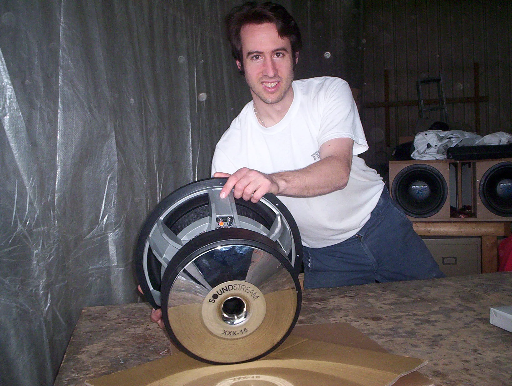
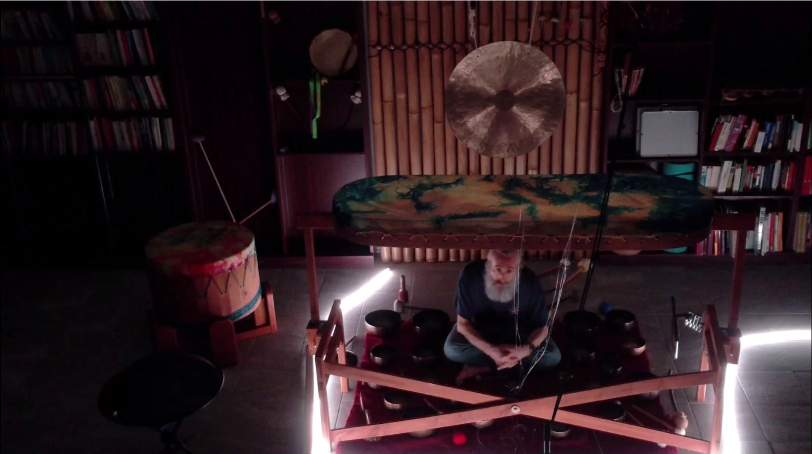

Une vie consacrée à comprendre, construire et faire vivre le son.
Vincent Robert est un explorateur du son dont le parcours relie l’audio haute performance, les vibrations, la résonance et l’expérience humaine du son.
Le son ne s’écoute pas seulement.
Dès l’âge de 12 ans, Vincent investit environ 1 500 $ dans son premier véritable système de son — une somme considérable il y a près de 38 ans. Depuis, il écoute, compare, construit et analyse le son de façon instinctive.
Après environ quinze années comme DJ, incluant des soirées 14 à 18 ans, des événements privés, des mariages, des fêtes de bureau, des bars et des événements corporatifs, il développe Audio Fidélité, une entreprise spécialisée dans les systèmes audio automobiles.
Des installations accessibles aux projets de compétition, son objectif n’était pas seulement la puissance : il cherchait la profondeur, la précision, la dynamique et une expérience capable d’envelopper l’auditeur.
« Vincent n’a pas commencé à explorer le pouvoir du son avec CymatiqueLab. CymatiqueLab représente l’évolution naturelle d’un parcours consacré depuis longtemps à comprendre, construire et faire vivre le son. »

{kind=link}
Audio Fidélité, IASCA et la culture du réglage.
Vincent a conçu des systèmes de toutes dimensions, agi comme juge et organisé des compétitions ainsi que des journées de formation pour IASCA, une association internationale majeure du domaine de l’audio automobile.
Cette période lui a appris qu’un son dépend autant de la source que de l’espace, des matériaux, de l’isolation, du positionnement, de la résonance et de la personne qui écoute.
Martin Leroux, lui aussi engagé dans le milieu, faisait partie de cette époque riche en projets, en rencontres et en expérimentation.

Un son profond, complexe et presque primordial.
Le gong a ramené Vincent vers un son particulier qui l’attire depuis aussi loin qu’il puisse se souvenir : un son qui évoque pour lui la création de l’univers.
Les haut-parleurs ont laissé une place aux gongs, aux bols tibétains, aux tambours, au binaural et à l’analyse spectrale. La technologie, l’écoute et l’expérimentation demeurent toutefois au cœur de la démarche.
CymatiqueLab proposera des voyages sonores, des rencontres privées, des expériences de groupe, des contenus à distance et, progressivement, des projets documentés autour du sommeil, du stress, de l’attention, de la mémoire et des ressentis — sans promesse médicale.
Jusqu’où le son peut-il nous faire ressentir, découvrir et vivre quelque chose de nouveau?
Un laboratoire vivant qui évolue avec chaque expérience.
Les archives Audio Fidélité, les nouvelles analyses, les enregistrements 3Dio et les témoignages seront ajoutés progressivement.